Путь «Смерть»
От слабой к сильной: Seq 9 «Собиратель Трупов» → Seq 1 «Бледный Император». Сменить путь можно на «Тьма» — с Seq 5 и сильнее, зельем на ступень выше (как).
| Seq | Последовательность | Ступень сервера |
|---|---|---|
| 9 | Собиратель Трупов | II |
| 8 | Могильщик | III |
| 7 | Медиум | IV |
| 6 | Проводник Духов | V |
| 5 | Привратник | VI |
| 4 | Бессмертный | VII |
| 3 | Перевозчик | VIII |
| 2 | Консул Смерти | — |
| 1 | Бледный Император | — |
У каждой последовательности: зелье и его ингредиенты (главный — первым), способности, которые она открывает, и отыгрыш — действия, которые переваривают зелье. Ингредиенты указаны с двумя самыми доступными источниками; все — по ссылке. Ингредиенты Seq 9–6 этого пути бывают и в товарах у жителя Торговец Потусторонних — у каждого по 2 случайных предложения на уровень (цены).
Seq 9 · Собиратель Трупов
Зелье  Собиратель Трупов Зелье, формула
Собиратель Трупов Зелье, формула  Собиратель Трупов Рецепт зелья (Последовательность 9). Эта Seq нужна для ступени II.
Собиратель Трупов Рецепт зелья (Последовательность 9). Эта Seq нужна для ступени II.
Ингредиенты
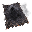
Кристалл Обмотанного тканью — добыча: Визер-скелет — 2,5 % за убийство игроком; сундук: Постройки Мира духов — 41 %. Все источники (4)- Грецкий орех с глубоким узором — существо мода: Пузырь (водится: Мир духов; приходит и Ночью Мира духов) — 38 % за убийство. Все источники (2)
- Душистая шершнёвая трава — крафт: верстак; существо мода: Мрачный Жнец (водится: Мир духов, Подземный мир; приходит и Ночью Мира духов) — 27 % за убийство. Все источники (3)
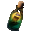
Вытяжка из вымоченной тополиной коры — бутылка воды: Берёзовое бревно — 100 % за попытку, бутылка остывает 0,5 с. Все источники (2)- Кость — обычный предмет
Способности
- Медитация — Медитировать, восполняя духовность
- Физическое усиление (пассивная)
- Незримость для нежити (пассивная) — Нежить больше не видит в вас цель
Отыгрыш — переваривание за действие и перерыв между засчитанными:
- Поставить голову моба — 1,4 %, раз в 10 с
- Добыть руду — 0,47 %, раз в 10 с
- Применить «Око смерти» — 1,9 %, раз в 15 с
- Подобрать кость — 0,95 %, раз в 5 с
- Подобрать гнилую плоть — 0,76 %, раз в 5 с
- Убить нежить — 0,57 %, раз в 5 с
Seq 8 · Могильщик
Зелье 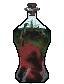 Могильщик Рецепт зелья (Последовательность 8). Эта Seq нужна для ступени III.
Могильщик Рецепт зелья (Последовательность 8). Эта Seq нужна для ступени III.
Ингредиенты
 Глазное яблоко ворона, зовущего смерть — добыча: Заклинатель — 20 % за убийство игроком; сундук: Постройки Мира духов — 34 %. Все источники (4)
Глазное яблоко ворона, зовущего смерть — добыча: Заклинатель — 20 % за убийство игроком; сундук: Постройки Мира духов — 34 %. Все источники (4) Спирт — крафт: верстак; сундук: Постройки Мира духов — 34 %. Все источники (3)
Спирт — крафт: верстак; сундук: Постройки Мира духов — 34 %. Все источники (3) Сок золотого дурмана — пустая бутылка: Одуванчик, Подсолнух — 50 % за попытку, бутылка остывает 1 с; сундук: Постройки Мира духов — 29 %. Все источники (3)
Сок золотого дурмана — пустая бутылка: Одуванчик, Подсолнух — 50 % за попытку, бутылка остывает 1 с; сундук: Постройки Мира духов — 29 %. Все источники (3)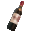
Красное вино — сундук: Клад — 40 %; житель: Фермер (уровень «мастер») — 24 изумруда, до 2 сделок. Все источники (4) Мак — обычный предмет
Мак — обычный предмет
Способности
- Око смерти
- Общение с духами
Отыгрыш — переваривание за действие и перерыв между засчитанными:
- Добыть руду — 0,84 %, раз в 10 с
- Поймать рыбу — 0,42 %, раз в 10 с
- Применить «Общение с духами» — 1,7 %, раз в 15 с
- Расчистить подозрительный блок — 0,84 %, раз в 20 с
- Подобрать кость — 0,67 %, раз в 5 с
- Стоять на уровне бедрока — 0,34 %, раз в 20 с
Seq 7 · Медиум
Зелье Медиум Зелье, формула  Медиум Рецепт зелья (Последовательность 7). Эта Seq нужна для ступени IV.
Медиум Рецепт зелья (Последовательность 7). Эта Seq нужна для ступени IV.
Ингредиенты
 Кристалл Мира духов — крафт: верстак; сундук: Постройки Мира духов — 26 %. Все источники (4)
Кристалл Мира духов — крафт: верстак; сундук: Постройки Мира духов — 26 %. Все источники (4) Сок нарцисса — пустая бутылка: Оранжевый тюльпан — 50 % за попытку, бутылка остывает 1 с; существо мода: Безголовая невеста (водится: Мир духов) — 0,49 % за убийство. Все источники (3)
Сок нарцисса — пустая бутылка: Оранжевый тюльпан — 50 % за попытку, бутылка остывает 1 с; существо мода: Безголовая невеста (водится: Мир духов) — 0,49 % за убийство. Все источники (3) Целые остатки волос суккуба — крафт: верстак; существо мода: Безголовая невеста (водится: Мир духов) — 7,2 % за убийство. Все источники (3)
Целые остатки волос суккуба — крафт: верстак; существо мода: Безголовая невеста (водится: Мир духов) — 7,2 % за убийство. Все источники (3) Порошок мухи Фейнапоттер — блок: Пчелиное гнездо (только природный блок) — 20 % за блок; существо мода: Безголовая невеста (водится: Мир духов) — 7,2 % за убийство. Все источники (3)
Порошок мухи Фейнапоттер — блок: Пчелиное гнездо (только природный блок) — 20 % за блок; существо мода: Безголовая невеста (водится: Мир духов) — 7,2 % за убийство. Все источники (3) Маринованный паучий глаз — обычный предмет
Маринованный паучий глаз — обычный предмет
Способности
- Личина зомби
- Вселение духа
- Солнечная уязвимость (пассивная) — Днём вы страдаете от слабости. Атаки пути Солнца наносят вам на 50% больше урона
Отыгрыш — переваривание за действие и перерыв между засчитанными:
- Использовать нотный блок — 0,74 %, раз в 10 с
- Сварить зелье — 0,74 %, раз в 15 с
- Применить «Вселение духа» — 1,5 %, раз в 20 с
- Поставить фонарь душ — 0,59 %, раз в 10 с
- Поставить факел душ — 0,44 %, раз в 5 с
- Использовать котёл — 0,44 %, раз в 10 с
- Прочитать подписанную книгу — 0,44 %, раз в 15 с
Seq 6 · Проводник Духов
Зелье 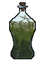 Проводник Духов Рецепт зелья (Последовательность 6). Эта Seq нужна для ступени V.
Проводник Духов Рецепт зелья (Последовательность 6). Эта Seq нужна для ступени V.
Ингредиенты
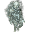
Душа бледного лича — крафт: верстак; сундук: Постройки Мира духов — 18 %. Все источники (4) Прах мумии — археология: Пустынный храм — подозрительный песок, Колодец в пустыне — подозрительный песок — 20 %; сундук: Постройки Мира духов — 15–18 %. Все источники (4)
Прах мумии — археология: Пустынный храм — подозрительный песок, Колодец в пустыне — подозрительный песок — 20 %; сундук: Постройки Мира духов — 15–18 %. Все источники (4)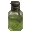
Гидролат козлобородника — пустая бутылка: Коза (биом «горы») — 50 % за попытку, бутылка остывает 10 с; сундук: Постройки Мира духов — 38 %. Все источники (3)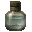
Вода древнего колодца — пустая бутылка: источник воды (в деревне) — 100 % за попытку, бутылка остывает 0,5 с; сундук: Постройки Мира духов — 35 %. Все источники (3) Паучий глаз — обычный предмет
Паучий глаз — обычный предмет
Способности
- Воссоздание
- Слово духа
Отыгрыш — переваривание за действие и перерыв между засчитанными:
- Использовать поводок — 0,32 %, раз в 10 с
- Поторговать с жителем — 0,63 %, раз в 20 с
- Применить «Слово духа» — 1,3 %, раз в 20 с
- Плыть на лодке — 0,5 %, раз в 10 с
- Поставить фонарь душ — 0,38 %, раз в 10 с
- Убить нежить — 0,38 %, раз в 5 с
Seq 5 · Привратник
Зелье 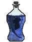 Привратник Рецепт зелья (Последовательность 5). Эта Seq нужна для ступени VI.
Привратник Рецепт зелья (Последовательность 5). Эта Seq нужна для ступени VI.
Ингредиенты
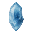
Кристаллическое ядро тысячерукого призрака — крафт: верстак; существо мода: Призрак (водится: Мир духов, Подземный мир; приходит и Ночью Мира духов) — 11 % за убийство.- Цветок, выросший из трупа — крафт: верстак; существо мода: Мрачный Жнец (водится: Мир духов, Подземный мир; приходит и Ночью Мира духов) — 9,6 % за убийство. Все источники (3)
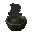
Почва, осквернённая Миром духов — блок: Почва душ (лопатой; только природный блок) — 0,2 % за блок; блок: Земля (в Мире духов или в Клочке Мира духов (верхний мир)) — 40 % за блок. Все источники (5) Эфирное масло граба — пустая бутылка: Дубовое бревно (в биоме: Березняк, Реликтовый березняк) — 50 % за попытку, бутылка остывает 1 с. Все источники (2)
Эфирное масло граба — пустая бутылка: Дубовое бревно (в биоме: Березняк, Реликтовый березняк) — 50 % за попытку, бутылка остывает 1 с. Все источники (2) Гнилая плоть — обычный предмет
Гнилая плоть — обычный предмет
Способности
- Духовное зрение
- Врата в Подземный мир
- Внутренний Подземный мир
- Посланник смерти
Отыгрыш — переваривание за действие и перерыв между засчитанными:
- Убить сильного моба — 0,53 %, раз в 5 с
- Убить при низком здоровье — 0,53 %, раз в 2 с
- Применить «Врата в Подземный мир» — 1,1 %, раз в 20 с
- Убить нежить — 0,42 %, раз в 5 с
- Использовать якорь возрождения — 0,42 %, раз в 20 с
- Войти в Незер — 0,53 %, раз в 30 с
Seq 4 · Бессмертный
Зелье 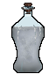 Бессмертный Рецепт зелья (Последовательность 4). Эта Seq нужна для ступени VII.
Бессмертный Рецепт зелья (Последовательность 4). Эта Seq нужна для ступени VII.
Ингредиенты
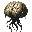
Мозг взрослого пернатого змея — существо мода: Асман (водится: Мир духов, океаны) — 41 % за убийство. Порошок травы-струны — блок: Паутина — 50 % за блок. Все источники (2)
Порошок травы-струны — блок: Паутина — 50 % за блок. Все источники (2) Порошок ломоноса — блок: Хаустония серая (ножницами) — 25 % за блок. Все источники (2)
Порошок ломоноса — блок: Хаустония серая (ножницами) — 25 % за блок. Все источники (2) Засохшая виноградная лоза — крафт: костёр. Все источники (2)
Засохшая виноградная лоза — крафт: костёр. Все источники (2) Чернильный мешок — обычный предмет
Чернильный мешок — обычный предмет
Способности
- Мифическая форма
- Печать бессмертия
- Странствие по Миру духов
- Заклинания смерти
Отыгрыш — переваривание за действие и перерыв между засчитанными:
- Убить при низком здоровье — 0,84 %, раз в 2 с
- Съесть золотое яблоко — 0,42 %, раз в 10 с
- Атаковать более сильного моба — 0,42 %, раз в 5 с
- Выжить на грани смерти — 0,42 %, раз в 5 с
- Выпить зелье исцеления — 0,25 %, раз в 10 с
Seq 3 · Перевозчик
Зелье 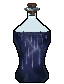 Перевозчик Рецепт зелья (Последовательность 3). Эта Seq нужна для ступени VIII.
Перевозчик Рецепт зелья (Последовательность 3). Эта Seq нужна для ступени VIII.
Ингредиенты
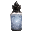
Линька бессмертной цикады — сундук: Постройки Мира духов — 2,3 %; существо мода: Мрачный Жнец (водится: Мир духов, Подземный мир; приходит и Ночью Мира духов) — 3,9 % за убийство. Глаза осьминога — существо мода: Мурлок (водится: океаны) — 3,7 % за убийство. Все источники (2)
Глаза осьминога — существо мода: Мурлок (водится: океаны) — 3,7 % за убийство. Все источники (2)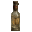
Крепкий спирт — крафт: верстак. Все источники (2)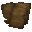
Страницы дневника старше 22 лет — житель: Библиотекарь (уровень «подмастерье») — 20 изумрудов, до 4 сделок; существо мода: Демон знания (водится: Мир духов, океаны; приходит и Ночью Мира духов) — 5,6 % за убийство. Все источники (3)- Перо — обычный предмет
Способности
- Бледное око
- Длань смерти
- Перерождение (пассивная) — Когда вы должны умереть, смерть отменяется.
Отыгрыш — переваривание за действие и перерыв между засчитанными:
- Плыть на лодке — 0,32 %, раз в 10 с
- Поставить фонарь душ — 0,32 %, раз в 10 с
- Применить «Заклинания смерти» — 0,63 %, раз в 20 с
- Плыть под водой — 0,13 %, раз в 15 с
- Поймать рыбу — 0,16 %, раз в 10 с
- Использовать поводок — 0,16 %, раз в 10 с
Seq 2 · Консул Смерти
Зелье 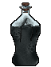 Консул Смерти Рецепт зелья (Последовательность 2).
Консул Смерти Рецепт зелья (Последовательность 2).
Ингредиенты
 Консул Смерти Характеристика Потустороннего (Последовательность 2) — характеристика Потустороннего
Консул Смерти Характеристика Потустороннего (Последовательность 2) — характеристика Потустороннего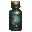
Ртуть — крафт: плавильная печь; сундук: Постройки Мира духов — 18 %. Все источники (4)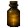
Эфирное масло жимолости — крафт: верстак. Все источники (2)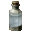
Морская, озёрная и ледниковая вода — крафт: верстак; сундук: Постройки Мира духов — 16 %. Все источники (3)- Светящийся чернильный мешок — обычный предмет
Способности
- Власть ангела — Ангельская сила: странствуйте по Миру духов и сокрушайте артефакты
- Пламя смерти
- Страна мёртвых
Отыгрыш — переваривание за действие и перерыв между засчитанными:
- Поставить голову моба — 0,21 %, раз в 10 с
- Убить сильного моба — 0,21 %, раз в 5 с
- Применить «Страна мёртвых» — 0,63 %, раз в 20 с
- Поторговать с жителем — 0,17 %, раз в 20 с
- Убить нежить — 0,13 %, раз в 5 с
Seq 1 · Бледный Император
Зелье 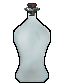 Бледный Император Рецепт зелья (Последовательность 1).
Бледный Император Рецепт зелья (Последовательность 1).
Ингредиенты
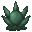
Бледный Император Характеристика Потустороннего (Последовательность 1) — характеристика Потустороннего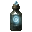
Порошок останков пойманного призрака — добыча: Скелет (в биоме: Долина песка душ) — 2 % за убийство игроком; сундук: Постройки Мира духов — 15 %. Все источники (3)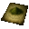
Порошок мелиссы — сундук: Библиотека крепости — 30 %; сундук: Темница — 12 %.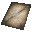
Звёздная карта, начертанная кровью духа — крафт: верстак; сундук: Постройки Мира духов — 15 %. Все источники (3) Порох — обычный предмет
Порох — обычный предмет
Отыгрыш — переваривание за действие и перерыв между засчитанными:
- Убить сильного моба — 0,16 %, раз в 5 с
- Убить при низком здоровье — 0,11 %, раз в 2 с
- Применить «Длань смерти» — 0,32 %, раз в 20 с
- Убить босса — 0,21 %, раз в 1 мин
- Убить нежить — 0,11 %, раз в 5 с
- Поставить голову моба — 0,084 %, раз в 10 с